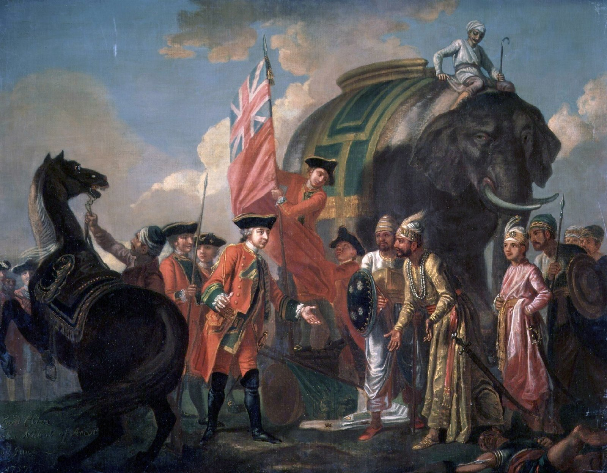
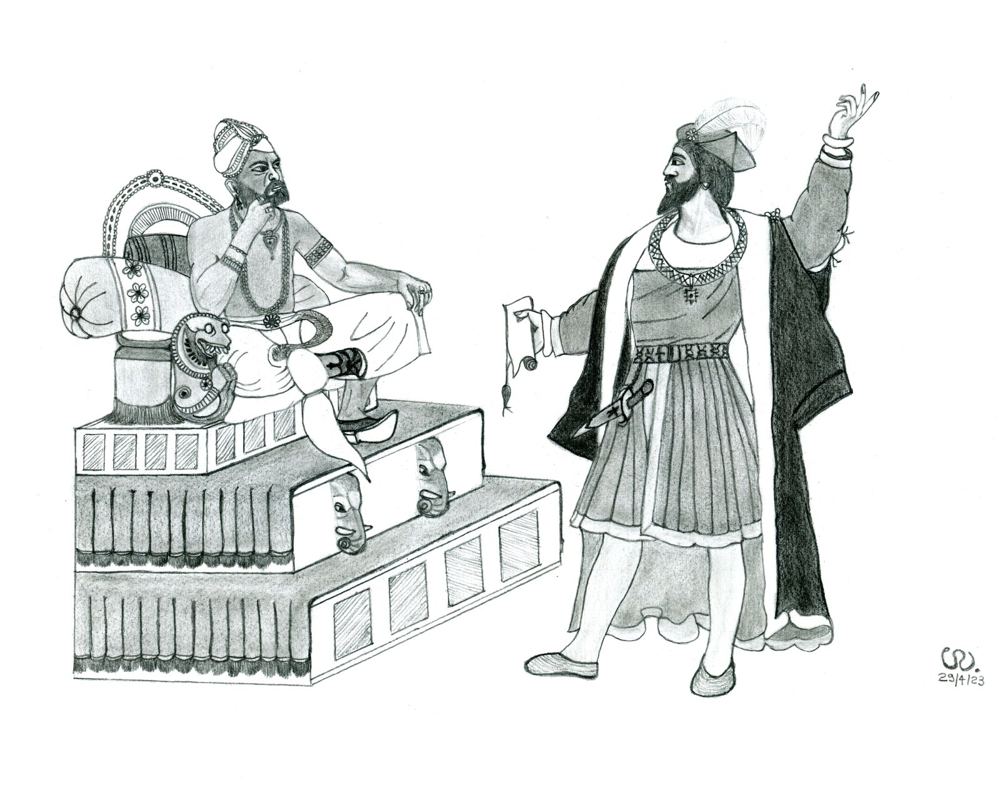
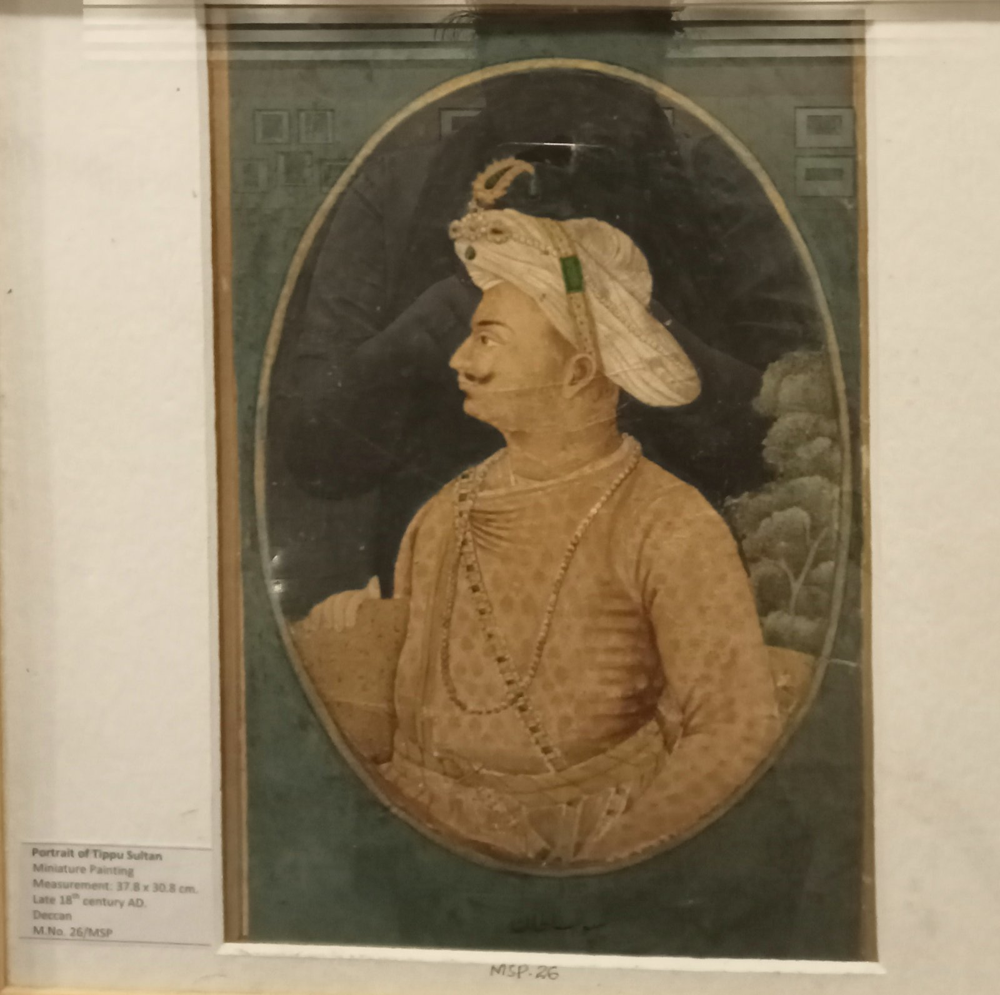

Image Title
Zoom with wheel • Drag to pan • Click reset
100%
Modern Indian History • Module 14: European Arrival & British Expansion
Following the Ottoman capture of Constantinople in 1453, European mercantile powers sought direct maritime routes to the fabled spice riches of India. What began as coastal trading posts by the Portuguese, Dutch, English, and French swiftly metastasized into geopolitical rivalry, culminating in the British East India Company's conquest of Bengal (Plassey & Buxar), defeat of Mysore and the Marathas, and aggressive expansion under Wellesley and Dalhousie.

Clive meets Mir Jafar after Nawab Sirajuddaula's defeat on the banks of the Bhagirathi.
Chronology of the 5 European Companies
European trading powers arrived in sequence: Portuguese (1498), Dutch (1602), English (1600/1608), Danish (1616), and French (1664). Through commercial monopoly, naval power, and political intrigue, the English eliminated all rivals.

The direct European maritime voyage to India that altered the course of global history.
Francisco de Almeida (1505–09) initiated the Blue Water Policy (naval Cartaze monopoly). Alfonso de Albuquerque (1509–15) captured Goa from Bijapur Sultan in 1510 and abolished Sati. Capital shifted from Cochin to Goa in 1530 by Nino de Cunha.
Established first factory at Masulipatnam (1605), then Pulicat (1610, minted gold Pagodas), Surat (1616), Chinsurah (1653, Fort Gustavus), Patna, and Nagapatam. Focused on silk, cotton, indigo, and opium trade. Decisively crushed by Robert Clive in the Battle of Bedara / Chinsurah (1759), after which the Dutch withdrew to the Indonesian archipelago.
Chartered on 31 Dec 1600 by Queen Elizabeth I. Captain William Hawkins (ship *Hector*, 1608) and Sir Thomas Roe (1615) secured Mughal farmans from Jahangir. Established factories at Surat (1613), Madras (Fort St. George, 1639 by Francis Day), Bombay (dowry gift to Charles II, 1661), and Calcutta (Fort William, 1700 by Job Charnock).
Formed by Finance Minister Colbert under Louis XIV. First factory at Surat (1668) by Francois Caron. Francois Martin founded Pondicherry (1674). Clashed with British in 3 Carnatic Wars (1746–63). French General Dupleix excelled in diplomacy, but British General Eyre Coote smashed French power at the Battle of Wandiwash (1760); reduced to trade outposts by the Treaty of Paris (1763).
| Company Name | Charter / Formation | First Factory in India | Headquarters in India | Decisive Defeat / Exit |
|---|---|---|---|---|
| Portuguese (Estado da India) | 1498 AD | Calicut (1500) / Cochin (1503) | Cochin (1503–30), Goa (1530–1961) | Liberated by India (1961) |
| English East India Company | 1600 AD | Masulipatnam (1611) / Surat (1613) | Calcutta (Fort William, 1700) | Became Sovereign Ruler |
| Dutch East India Company (VOC) | 1602 AD | Masulipatnam (1605) | Pulicat (1610–90), Nagapatam (1690) | Battle of Bedara (1759) |
| Danish East India Company | 1616 AD | Tranquebar (1620, TN) | Serampore (1676, Bengal) | Sold factories to British (1845) |
| French East India Company | 1664 AD | Surat (1668) | Pondicherry (Fort Louis, 1674) | Battle of Wandiwash (1760) |
Conquest of Bengal & The Diwani (1757–1772)
Bengal was the richest province of the Mughal Empire. In two military engagements—Plassey (1757) and Buxar (1764)—the British gained unhindered commercial exploitation and territorial sovereignty.
Fought on the banks of the Bhagirathi river in Nadia district between Robert Clive and young Nawab Sirajuddaula. Preceded by the dispute over the abuse of the British Dastak (tax-free trade passes) and illegal fortification of Calcutta without Nawab's consent.
Loyal Martyrs: Only Mir Madan and Mohan Lal fought heroically for the Nawab. Mir Jafar was installed as the puppet Nawab and ceded the revenue of the 24 Parganas to the EIC.
Nawab Mir Qasim shifted his capital to Munger (modern firearms factory) and abolished all internal trade transit duties to create a level playing field. The Company ousted him, triggering war. Mir Qasim formed a triple alliance with Nawab of Awadh Shuja-ud-Daula and fugitive Mughal Emperor Shah Alam II.
British forces led by Major Hector Munro decisively routed the joint confederate army. Buxar proved far more significant than Plassey because it demonstrated British military superiority over the Mughal Emperor and the Premier Prince of India.
Treaty of Allahabad (Aug 1765): Clive secured the Diwani of Bengal, Bihar, and Orissa for an annual payment of Rs 26 lakh. Clive introduced the ruinous Dual System (1765–1772), abolished only by Warren Hastings in 1772.
The Subjugation of Mysore, Marathas & Sikhs
Between 1767 and 1849, the British systematically dismantled the three most powerful martial kingdoms of India using divide-and-rule diplomacy, European artillery, and naval pressure.

Rocket pioneer and relentless adversary of British imperial expansion.
After Maharaja Ranjit Singh's death in 1839, the British fought the 1st Anglo-Sikh War (1845–46, Battles of Mudki, Aliwal, Sobraon; Treaty of Lahore). Following the 2nd Anglo-Sikh War (1848–49, Battle of Gujarat), Lord Dalhousie annexed Punjab in March 1849. The minor Maharaja Dalip Singh was pensioned off to England, and the famous Koh-i-Noor diamond was presented to Queen Victoria.
Subsidiary Alliance vs. Doctrine of Lapse
Two master doctrines transformed the map of India: Lord Wellesley's military protectorate system and Lord Dalhousie's aggressive dynastic annexations.
A system of military vassalage pioneered by French Dupleix but perfected by Wellesley. The Indian ruler had to:
Dalhousie's annexation weapon targeting dependent Indian princely states without a natural male heir:
Interactive Recall & Examination Drill
Cement high-yield prelims facts on European arrivals, the battles of Plassey and Buxar, Mysore wars, and annexation policies.
Loading question...
Loading answer...
5 High-Probability Questions for UPSC, APSC & State PSCs